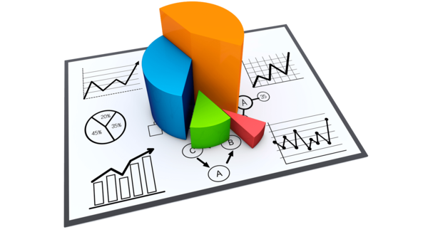

5 أسباب تجعل دراسة الجدوى ضرورية لنجاح مشروعك
يعتبر الكثيرون أن فكرة المشروع الرائعة هي كل ما يلزم للنجاح، لكن الواقع يثبت أن الأفكار وحدها لا تكفي. قبل أن تغامر برأس مالك ووقتك، تأتي دراسة الجدوى كخطوة استباقية لا غنى عنها، فهي بمثابة البوصلة التي توجه سفينة مشروعك نحو بر الأمان. في هذا المقال، نستعرض 5 أسباب جوهرية تجعل من دراسة الجدوى ضرورة قصوى.
1. تقدير التكاليف والإيرادات المتوقعة
تساعدك دراسة الجدوى على تحديد كافة التكاليف المحتملة، من تكاليف التأسيس والتشغيل إلى المصاريف غير المتوقعة. وفي المقابل، تمنحك تقديراً واقعياً للإيرادات التي يمكن تحقيقها. هذه المقارنة بين التكاليف والإيرادات هي التي تحدد ما إذا كان المشروع مربحاً من الأساس أم لا.
2. فهم السوق والمنافسين
من خلال الدراسة التسويقية، ستتمكن من تحديد حجم السوق المستهدف، ومعرفة من هم عملاؤك المحتملون، وما هي احتياجاتهم ورغباتهم. الأهم من ذلك، أنها تكشف لك عن منافسيك، نقاط قوتهم وضعفهم، مما يمنحك الفرصة لتمييز منتجك أو خدمتك وتقديم قيمة مضافة حقيقية.
3. تقليل المخاطر وتجنب الفشل
تعمل دراسة الجدوى كشبكة أمان، حيث تسلط الضوء على المخاطر المحتملة، سواء كانت مالية، تشغيلية، أو تسويقية. بمعرفة هذه المخاطر مسبقاً، يمكنك وضع خطط بديلة واستراتيجيات لمواجهتها، مما يقلل بشكل كبير من احتمالية فشل المشروع.
4. أداة أساسية للحصول على تمويل
إذا كنت تخطط للحصول على قرض بنكي أو جذب مستثمرين، فإن دراسة الجدوى الاحترافية هي أول ما سيطلبونه منك. هي الدليل المادي الذي يثبت أن مشروعك مدروس بعناية، وأن لديك خطة واضحة لتحقيق الأرباح، مما يزيد من ثقتهم فيك وفي جدوى الاستثمار في مشروعك.
5. اتخاذ قرار مستنير
في النهاية، الهدف الأسمى لدراسة الجدوى هو تزويدك بكافة المعلومات اللازمة لاتخاذ قرار واعٍ ومبني على حقائق وأرقام، لا على مجرد مشاعر أو تخمينات. القرار قد يكون المضي قدماً في المشروع، أو تعديله، أو حتى التخلي عنه تماماً والبحث عن فرصة أفضل. وفي كل الحالات، سيكون قرارك هو القرار الصحيح.
يقوم مكتب الرؤية الاقتصادية لدراسات الجدوى بإعداد دراسة الجدوى التسويقية والفنية والمالية لمشروعك تواصل معنا الآن
العودة إلى المدونة